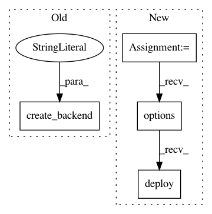

e4ca337e16bf4f0f749161932038665cefe7391e,python/ray/serve/tests/test_failure.py,,test_controller_failure,#Any#,26
Before Change
return "hello3"
ray.kill(serve.api._global_client._controller, no_restart=False)
serve.create_backend("controller_failure_2", function)
ray.kill(serve.api._global_client._controller, no_restart=False)
serve.create_endpoint(
"controller_failure_2",
backend="controller_failure_2",
After Change
ray.kill(serve.api._global_client._controller, no_restart=False)
function.options(backend_def=function2).deploy()
def check_controller_failure():
response = request_with_retries("/controller_failure", timeout=30)
return response.text == "hello2"
In pattern: SUPERPATTERN
Frequency: 3
Non-data size: 4
Instances
Project Name: ray-project/ray
Commit Name: e4ca337e16bf4f0f749161932038665cefe7391e
Time: 2021-04-08
Author: ed.nmi.oakes@gmail.com
File Name: python/ray/serve/tests/test_failure.py
Class Name:
Method Name: test_controller_failure
Project Name: ray-project/ray
Commit Name: e4ca337e16bf4f0f749161932038665cefe7391e
Time: 2021-04-08
Author: ed.nmi.oakes@gmail.com
File Name: python/ray/serve/tests/test_failure.py
Class Name:
Method Name: test_worker_replica_failure
Project Name: ray-project/ray
Commit Name: e4ca337e16bf4f0f749161932038665cefe7391e
Time: 2021-04-08
Author: ed.nmi.oakes@gmail.com
File Name: python/ray/serve/tests/test_failure.py
Class Name:
Method Name: test_http_proxy_failure